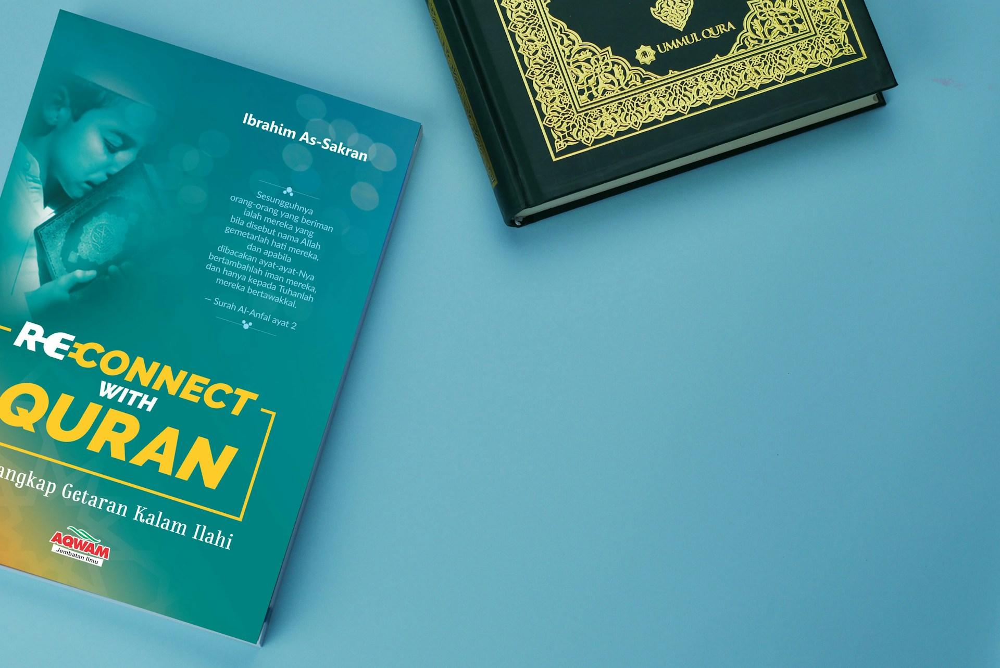
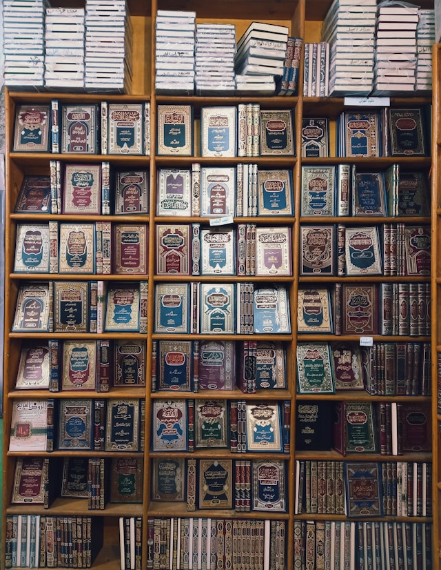

Koleksi Lengkap
Kami menyediakan kitab klasik, motivasi Islami, dan panduan pembelajaran untuk semua umur.
Selamat datang di Pustaka Muslim Official
Temukan koleksi buku Islami terbaik, artikel bermanfaat, dan layanan pengiriman cepat untuk setiap pembaca. Baca, pelajari, dan bangun pengalaman belajar yang lebih bermakna.
Buku Terpercaya
Ulasan Positif
Jam Layanan

Kami menyediakan kitab klasik, motivasi Islami, dan panduan pembelajaran untuk semua umur.
Konten terbaru dan inspiratif untuk memperdalam pemahaman agama dan ilmu pengetahuan.
Desain web adaptif untuk perangkat smartphone, tablet, dan desktop.
Transaksi aman dan dukungan pelanggan siap membantu setiap pertanyaan.
Pustaka Muslim Official hadir untuk semua kalangan dengan koleksi karya ulama dan penulis terpercaya. Fokus kami adalah meningkatkan kecintaan pada Al-Qur'an, sunnah, dan ilmu agama melalui buku berkualitas.
Selengkapnya
Membangun struktur dan desain landing page modern yang responsif.
Mengaktifkan navigasi mobile, mode gelap, dan animasi jumlah.
Transisi halaman yang halus untuk pengalaman pengguna lebih nyaman.
Landing page siap tampil cantik di semua ukuran layar.